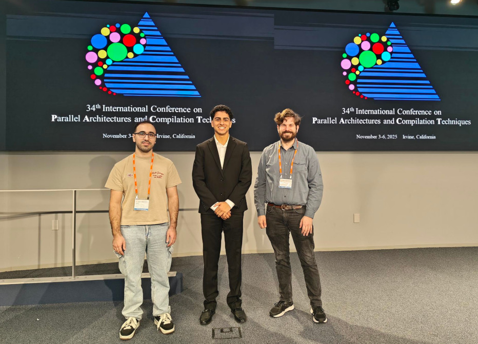

News
-
November 6, 2025:
Contratuations to the ACM SRC winners!
Undergraduate Student Category
- 1st Place: Armaan Hajarizadeh (University of Oregon)
Addressing Client Heterogeneity in FedProto with Precomputed Global Prototypes
- 2nd Place: Dayoung Lee (Seoul National University of Science and Technology)
A Pipelined Multi-Bank GEMM Accelerator for Memory Bottleneck Mitigation
Graduate Student Category
- 1st Place: Ravan Nazaraliyev (University of California, Riverside)
SCRUB: Subarray-Level Counter Update and Bank-Level Recovery Isolation for Efficient PRAC Rowhammer Mitigation
- 2nd Place: Nurlan Nazaraliyev (University of California, Riverside)
KiteVM: Decoupled Prefetching and Adaptive cgroup Limits for Disaggregated Memory
- 3rd Place: Yanze Wu (George Mason University)
Accelerating Hash-based Cryptography on modern Reconfigurable Architecture

-
November 2, 2025:
Join the PACT 2025 Discord server to get the latest announcements, coordinate Uber/Lyft rides, and more!
-
November 1, 2025:
The Proceedings for PACT 2025 are now online.
Access credentials will be shared at the conference location.
-
October 25, 2025:
The Program for PACT 2025 is now online.
-
August 2, 2025:
Registration for PACT 2025 is now open. Early registration deadline is September 23, 2025.